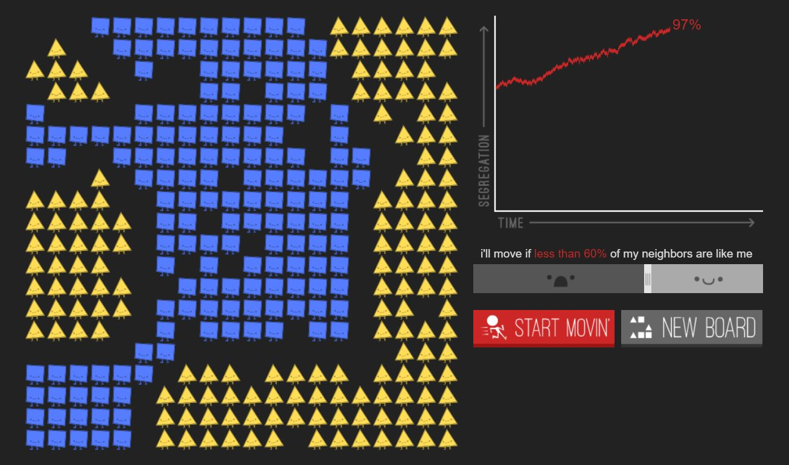
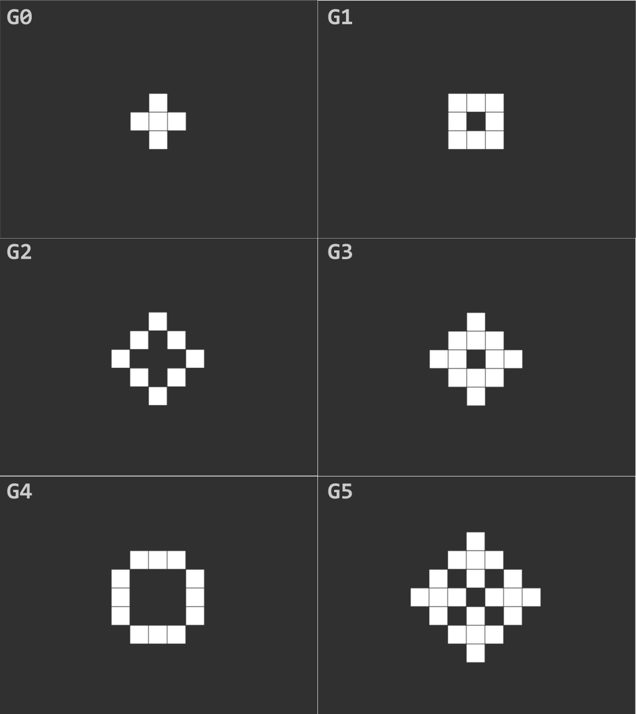
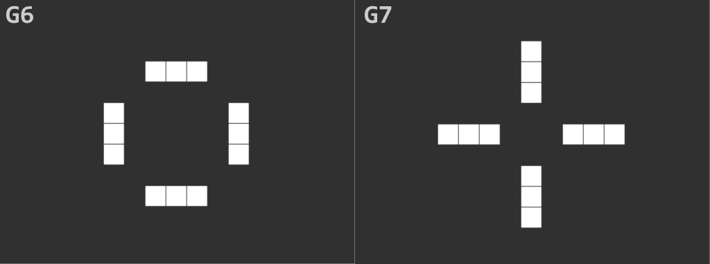

![]()
Start with Why
I am writing because I believe there is a powerful message in the ideas of Simon Sinek. Simon is the author of interesting material such as Start with why and Leaders eat Last. I have had a great time reading his books and watching his talks. The call to surround ourselves by people who believe what we believe1 had a powerful effect on the way I approach life.
Positive Reinforcement
Finding people who believe what we believe is reinforcing. When we find such people, trust emerges, we belong, and we experience a sense of purpose unlike any other. If I like you and you like me back, we are likely to hang out sooner than later. Humans hanging out together makes great things for humanity.
You might feel great alone. You might find other people difficult to deal with or distracting in a way that negatively impacts whatever you want to do. You might believe that being a lone wolf and going your own way is the best path for you. First, there’s a great deal of admiration thrown towards the renegade/rebel/visionary. Second, people are quite often humans (see Cognitive Dissonance).
In reality, the “lone wolf” is a less productive way2. An aggregation of like minded people creates a positive feedback loop that brings more like minded people to the group, generation after generation. Things cannot escalate to infinity (the world’s population is limited), but they can get pretty big, pretty fast3. We can easily model this positive feedback loop, which should look logistic:
Cognitive Dissonance
Another reason we aggregate with like minded people is to reduce cognitive dissonance. We experience an extreme load when dealing with opinions that are not aligned with what we think is true. Continuous accumulation of such a negative pressure ends up being unbearable. Thus, the relief we get from finding a group we belong to reinforces our behavior of moving towards/with them.
The Segregation Problem
A simple desire
Let’s be optimistic for a minute and assume that the vast majority of people have no problem living with people that are different (remember: I am using “different” to signify “people who believe differently from what they believe”). But let’s add a simple desire, they want to live surrounded by a majority of people who do believe what they believe (say, 60% of my neighbors are like me). Well, the bad news is that the simple desire evolves into high degrees of segregation. Check the following simulation here.

We start to see how easy rules can generate complex behaviors that are difficult to predict.
Complexity
If we are talking about complexity emerging from simple rules, I can’t help but to mention The Game of Life.
The Game of Life
The Game of Life is a creation by the mathematician John Horton Conway4. Basic rules apply to set life free and watch it evolve:
- Any live cell with fewer than two live neighbors dies, as if caused by underpopulation.
- Any live cell with two or three live neighbors lives on to the next generation.
- Any live cell with more than three live neighbors dies, as if by overpopulation.
- Any dead cell with exactly three live neighbors becomes a live cell, as if by reproduction.
Easy at it seems, these little cells can behave in spectacular ways. They can thrive and perish but they can also oscillate, establishing a pattern forever. Below I present 2 cases of many:
| Circle of Fire | Frog 2 |
|---|---|
 |
 |
These oscillators or organisms function as independent entities from day 1. But not all of them function like that. Some oscillators have a phase in which they grow or diversify.

Once self-assembled, they become stable and perpetuate.

In the previous case, the critical mass was quite limited but oscillators need not to be small, check this monster called 258P3!

I have digressed into this little cult game to show how very simple rules produce remarkably complex behavior that can scale from a few cells (read: small groups of people) to large ensambles (read: very large groups of people) and perpetuate in time (read: all History).
People Change
Wait a minute, you might say. People change, they don’t stay fixed believing any particular thing. Maybe. There might be evidence that, over the long run, some societal beliefs evolve 5. However, it’s also true that individuals are remarkably stubborn and will hold on to their core beliefs even when proven wrong. Moreover, the whole point of finding our tribe is to be able to keep the things that we believe intact (often holy).
Constant Beliefs
There are some reasons to assume that individual beliefs are constant:
- The fact that one chooses to affiliate/adhere with a group based on a subset of fixed beliefs (e.g, Holy Trinity, Fundamental Theorem of Algebra, …). Thus, one expects such beliefs, or at least the most fundamental ones, to be held constant for our lifetime or even longer than that.
- The fact that information within such group is segregated and presented in a way that clearly distinguishes us from them. Tainted information becomes increasingly difficult to recognize when it’s all the information there is.
- The fact that it requires an infinite amount of effort to think outside the margins of such reality, or diversify beliefs when stuck with a bunch of people that are riding the same boat, specially because all agreed on the first place that it was the correct boat to be in.
We might as well assume beliefs (B) to be held constant or change little over long periods of time (\(\frac{dB}{dt} \approx 0\) ).
The republic, Lost
Segregation allows two stories to live happily in two different worlds, worlds that never need to talk to each other. Groups of people that only receive a portion information will grow up to embody the beliefs they grew up with. We are all guilty of this. Moreover, we will happily fund the maintenance of institutions that allow us to hold and propagate our beliefs, regardless of how harmful they might be to them. Lawrence Lessig develops it further and more clearly than myself6. Andrew Yang wrote similar ideas in [The War on Normal People](https://en.wikipedia.org/wiki/The_War_on_Normal_People).
All in all
Segregation and self-sufficient organizations entice us in the private sphere. We seek to belong to them. That’s why we come up with religions, tribes, clubs, groups, neighborhood associations, and all other aggregates. But how do we manage situations in which that logic gets taken into spheres of public policy or politics?
What happens if the things that we believe, the things that segregate us, are disputes over facts?
What happens when we no longer agree on the definition of truth? Sticking our heads into our oasis of overlapping beliefs makes for a society unable to dialogue, willing to dangerously escalate into intolerance and violence.
Update From the Future
I originally wrote this article in 2017. I am editing this in 2023, having lived through this very scenario during a pandemic, and I am sure we all have very fresh answers to the closing questions 7.
Footnotes
SinekVideo↩︎
By the way, wolves are gregarious, social animals. No such thing as the lone wolf.↩︎
We can assume a logistic growth with the change in people over time has the shape \(\frac{dN}{dt} = rN \left( 1 - \frac{N}{K} \right)\)↩︎
https://ourworldindata.org/lgbt-rights↩︎
http://republic.lessig.org/↩︎
Of course, segregated answers. Echo chambers. You know the drill.↩︎
Reuse
Citation
@online{andina2017,
author = {Andina, Matias},
title = {Segregation of {Beliefs}},
date = {2017-12-01},
url = {https://matiasandina.netlify.app/posts/2017-12-01-segregation-of-beliefs/},
langid = {en}
}